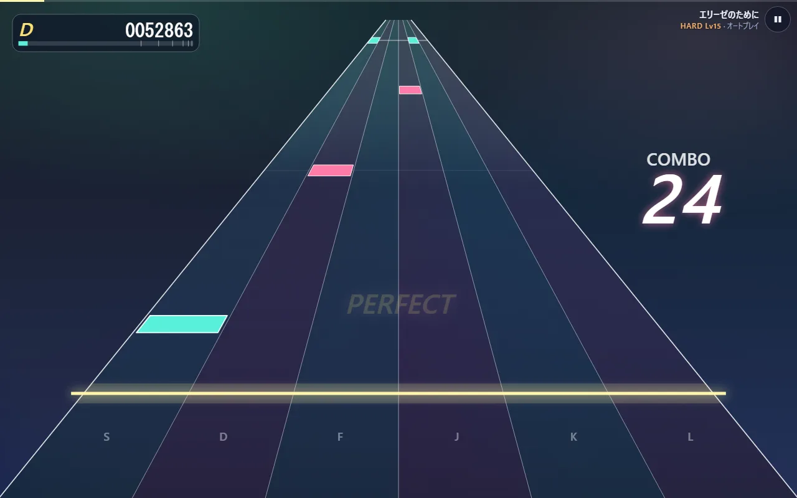
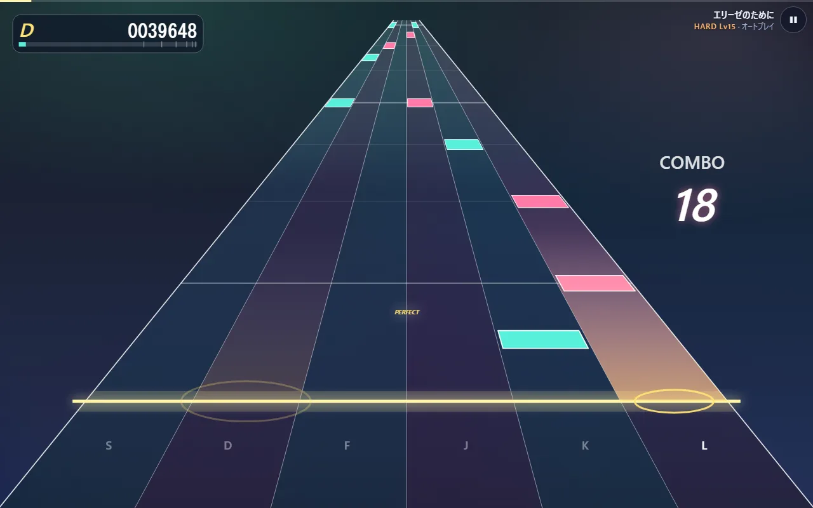

難易度・判定の幅・見た目を決めている数値
ゲームの手触りは、コードのあちこちに置いた数値で決まっています。ここでは「どこにあって、変えると何が起きるか」を一覧にします。どれも名前の付いた定数なので、1 か所を書き換えれば全体に効きます。
遊ぶ人が設定で変えられるもの
既定値は storage.ts L18-24、範囲は L39-45 です。範囲の外の値が保存されていても、読み込むときにこの範囲へ戻します。
| 設定 | 既定 | 範囲 | 変えると |
|---|---|---|---|
ノーツが流れてくる時間 approachSeconds |
1.6 秒 | 0.6〜4 秒 | 小さいほどノーツが速く流れ、画面に同時に見えるノーツが減る |
入力の補正 inputOffsetMs |
0 ms | ±300 ms | 判定に使う時刻から引く（→ notes/04-timing） |
表示の補正 visualOffsetMs |
0 ms | ±300 ms | 描画に使う時刻から引く |
音量 volume |
0.8 | 0〜1 | 全体の音の大きさ |
再生速度 rate |
1 | 0.5〜1 | 曲ごとゆっくりにする。判定の幅は実時間のままなので、遅くするほど易しくなる |
叩いた音だけ鳴らす keysound |
オフ | — | オンにすると、ノーツに結び付いた音は叩けたときだけ鳴る。伴奏などノーツの無い音はいつもどおり鳴る（engine.ts L59-64） |
自動演奏 autoplay |
オフ | — | ノーツを自動で叩く。オンの間はキーとタッチを受け付けず、keysound も切る |
設定はブラウザの localStorage に syncadence.v2.settings という名前で保存します（L27）。
流れてくる時間を変えると、同じ瞬間でも画面に並ぶノーツの量が変わります。


判定とスコア
| 名前 | 値 | 場所 | 変えると |
|---|---|---|---|
WINDOWS |
PERFECT 42・GREAT 83・GOOD 125・MISS 160 ms | judge.ts L6 | 広げるほど易しい。MISS の値より早い空振りは無視されるので、MISS を広げると早押しで次のノーツを消費しやすくなる |
HOLD_RELEASE_TOLERANCE_MS |
150 ms | L14 | ロングノーツを終点のどれだけ手前で離してよいか |
SCORE_WEIGHT |
1・0.75・0.35・0 | L16 | 判定ごとの点。GREAT を 0.75 にしているので、全部 GREAT だと 750,000 点 |
MAX_SCORE |
1,000,000 | L17 | 全部 PERFECT のときの点 |
| ランクの境目 | SSS 990,000・SS 970,000・S 940,000・A 880,000・B 800,000・C 700,000 | rank.ts L3-8 | それ未満は D |
キーとレーン
keys.ts L2-4 で、4 レーンは D F J K、6 レーンは S D F J K L です。左右の手の人差し指と中指（6 レーンは薬指も）がホームポジションのまま届く並びです。
進行
engine.ts L12-16 にあります。
| 名前 | 値 | 変えると |
|---|---|---|
START_DELAY |
0.15 秒 | 開始の操作から最初の音を予約するまでの余裕。短すぎると最初の音の予約が間に合わず欠ける |
LEAD_IN |
0.8 秒 | 最初のノーツが奥に現れるまでの間 |
TAIL_SECONDS |
2.5 秒 | 最後のノーツのあと、結果画面へ移るまで余韻を聞かせる時間 |
MAX_FLASHES |
24 | 同時に画面に残す判定の文字の数の上限 |
AUTOPLAY_PRESS_MS |
70 ms | 自動演奏で、短いノーツを押してから離すまでの時間 |
音の予約を何秒先までするか（lookahead）は 0.4 秒です（scheduler.ts L13）。長くするとフレームが大きく遅れても音が途切れにくくなる代わりに、予約済みの音が増えます。
見た目
奥行き（perspective.ts）
| 名前 | 値 | 変えると |
|---|---|---|
PERSPECTIVE |
2 | L9。透視の強さ。大きいほど奥でノーツが詰まり、手前で急に速くなる |
FAR_RATIO |
0.04 | L11。奥の端のレーン幅（判定線での幅に対する比）。小さいほど消失点へ鋭くすぼまる |
JUDGE_AT |
0.79 | L27。判定線の高さ（画面の上からの比） |
LANDSCAPE_WIDTH / LANDSCAPE_WIDTH_PER_HEIGHT |
0.79 / 1.4 | L29-30。横長の画面でのレーン全体の幅の上限。画面の幅の 79% と高さの 1.4 倍の小さい方 |
PORTRAIT_WIDTH |
0.94 | L32。縦長の画面では指で叩けるよう、ほぼ画面幅いっぱいに使う |
PERSPECTIVE の効き方を数字で見ると、判定線まで残り時間が半分（u = 0.5）のノーツが、奥から判定線までのどこにいるかは次のとおりです（depthOf の式に入れて計算）。
PERSPECTIVE |
残り半分の時点の位置 |
|---|---|
| 1 | 奥から 33% |
| 2（いまの値） | 奥から 25% |
| 4 | 奥から 17% |
時間は半分過ぎていても、見た目はまだ奥の 4 分の 1 です。残りの時間で手前へ一気に近づくので、ノーツが迫ってくるように見えます。
文字と光（highway.ts L28-52）
判定の文字を出す時間（JUDGEMENT_SHOW_MS 600 ms）、レーンが光る時間（FLASH_MS 320 ms）、ノーツの厚み、コンボやスコアの位置と大きさです。大きさはどれも画面の大きさに対する比で書いてあるので、画面の大きさが変わっても釣り合いが崩れません。
譜面の作り方（Python）
難易度（chart.py L39-44）
1 行が 1 つの難易度です。列の意味は Difficulty の定義（L25-36）にあります。
| EASY | NORMAL | HARD | EXPERT | 変えると | |
|---|---|---|---|---|---|
レーン数 lanes |
4 | 4 | 6 | 6 | |
採る拍の強さの上限 max_level |
1 | 2 | 3 | 4 | 大きいほど細かい音まで採る（0 = 小節の頭 … 4 = 全部） |
1 秒あたりのノーツ数の上限 nps_cap |
1.8 | 3.0 | 4.8 | 7.5 | 小節ごとに、これを超えたら拍の強さを 1 段粗くする（→ notes/02-from-score） |
最小の間隔 min_gap |
0.36 秒 | 0.21 秒 | 0.14 秒 | 0.095 秒 | これより近いノーツは拍の強い方だけ残す |
同じレーンの最小の間隔 jack_gap |
0.45 秒 | 0.26 秒 | 0.17 秒 | 0.12 秒 | 同じ指で続けて叩く間隔の下限 |
空白を埋める長さ fill_gap_beats |
2 拍 | 1.5 拍 | 1 拍 | 1 拍 | これより長い空白を、採らなかった旋律の音で埋める |
ロングノーツにする長さ hold_seconds / hold_beats |
0.9 秒・2 拍 | 0.7 秒・1.5 拍 | 0.6 秒・1 拍 | 0.5 秒・1 拍 | これ以上続く音を押しっぱなしのノーツにする |
左手を足す拍の強さ bass_level |
足さない | 足さない | 0（小節の頭） | 1（拍の頭） | 大きいほど左手のノーツが増える |
その他（chart.py L19-22）
| 名前 | 値 | 変えると |
|---|---|---|
GRACE_MAX_SECONDS |
0.07 秒 | これより短く拍から外れた音を装飾音として外す |
CONTOUR_WINDOW_SECONDS |
3.0 秒 | レーンを決めるとき、前後何秒の音域を見るか。短いほど細かい上下にもレーンが大きく振れる |
MIN_CONTOUR_SPAN |
7 半音 | 音域が狭い旋律でも、この幅があるものとしてレーンに割り振る。小さいほど狭い音域でもレーンを端まで使う |
HOLD_RELEASE_GAP |
0.12 秒 | ロングノーツの終点と、同じレーンの次のノーツの間に空ける時間 |
難易度の数字（レベル）は round(1 + p90 × 3.2) で出します（L343）。p90 は 2 秒ごとの密度（ノーツ数 ÷ 2）を並べたときの上位 1 割あたりの値です。3.2 を大きくすると、同じ譜面でもレベルの数字が大きく出ます。
ピアノの音（build_samples.py L29-31、regions.ts L64-66）
| 名前 | 値 | 変えると |
|---|---|---|
MAX_SECONDS |
7 秒 | 録音をこの長さで切る。短くするとファイルは小さくなるが、長く伸ばす音が途中で消える |
FADE_SECONDS |
1 秒 | 切る手前でだんだん小さくする長さ |
BITRATE |
80k | mp3 の音質。上げるほど音が良く、ファイルが大きい |
velocityGain |
0.18 + 0.82 × 強さ^1.6 |
打鍵の強さ（0〜1）から音量への写し方。弱い音でも 0.18 は残し、強い音ほど大きく差を付ける |